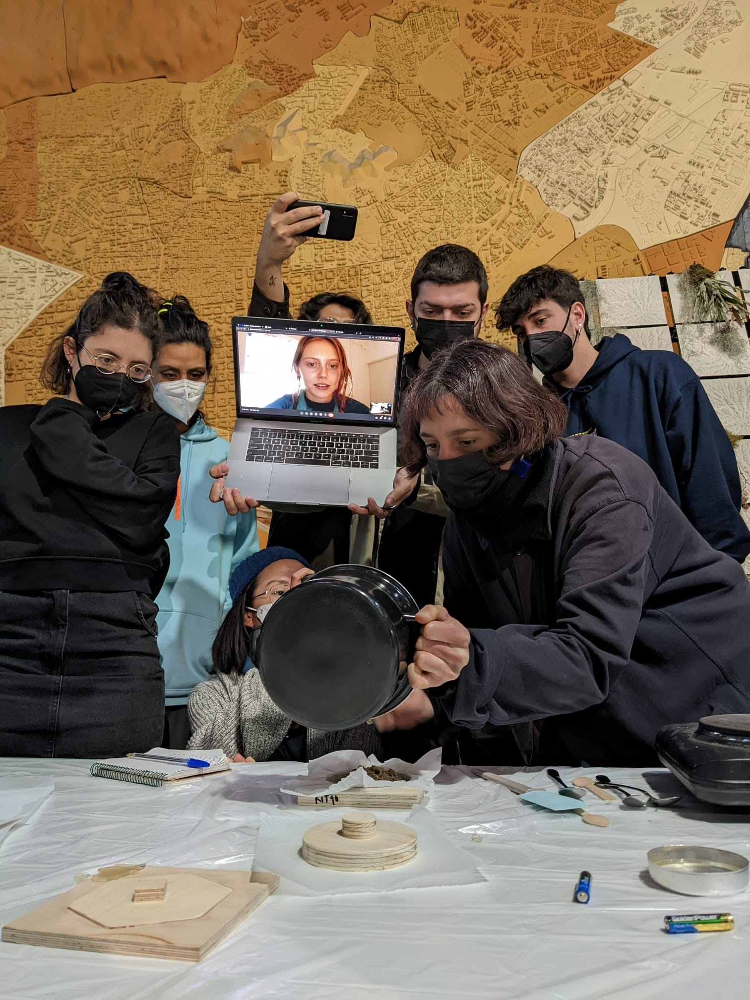
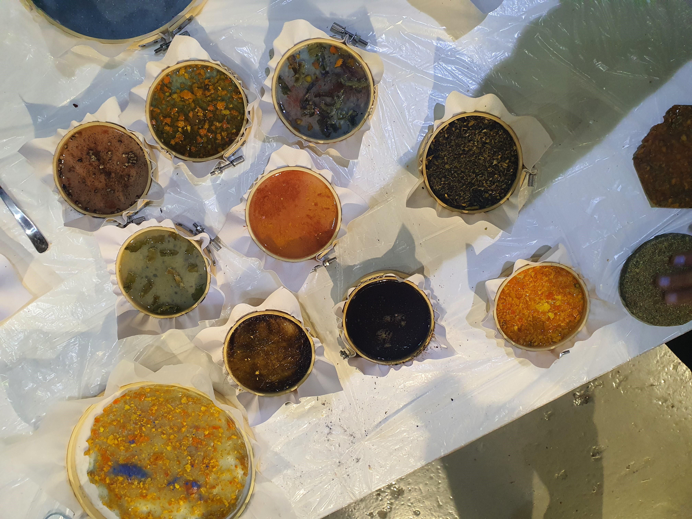
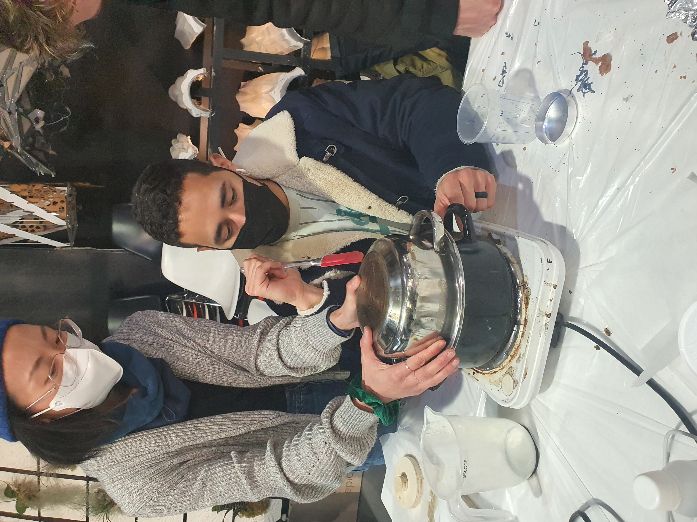
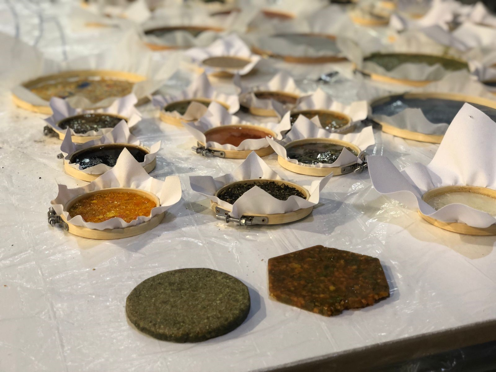
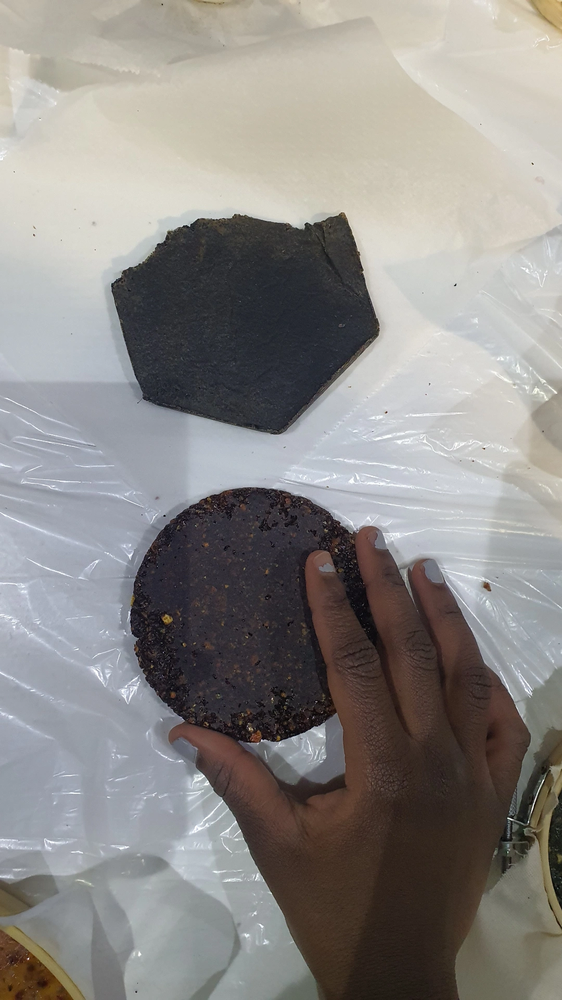
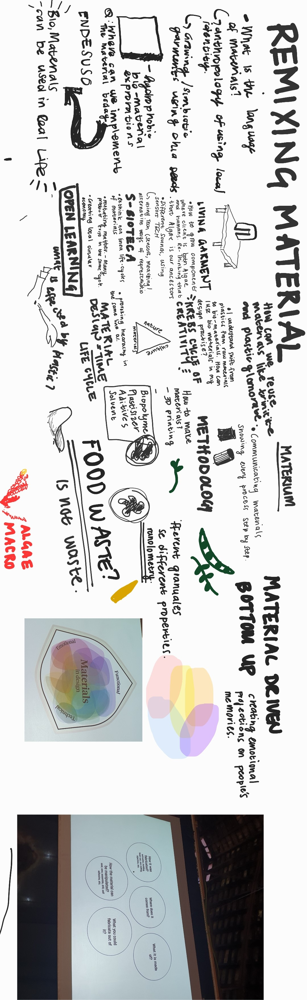

Reflection on Remixing Materials. 20.01.2022
20.01.2022What is the language of materials?
I found it very impactful that material sciences and making started anthropologically as a means of local identity and availability. Our ancestors forged tools and weapons from the objects around them, creating an alchemy of new uses from the seemingly unusable. I enjoyed Lara showing us that materials can have multiple lfe times in the way they are used , and encouraging us to think og material design as a continuous life cycle rather than linear timeline.

Breathing new life
Food waste is not waste, and the plastics in the ocean are our new gold to be mind and sought after. In exploring this new wave of making materials from what we regarded as waste, we can unlock and create new properties and characteristics. An example that stood out is applying the properties of algae into bio- materials. Furthermore, it was inlighting tho take into mind, how sustaibable are bio-materials? Applying a matrix measuring biodegradability, energy usage in production and the impact of the composite additives and ingredients. Albeit, using food waste is a brilliant source of new material culture with a lot of possibilities. After the class, we were tasked to dry and bring our own food waste to create our own bio materials the next class Material in design

After understanding the cyclical life of materials, the next part that stood out to me was rethinking how materials can create emotional projections on memories and consciousness. Kreb cycle of creativity stood out to me, as a flow between nature, culture and materials. I began to wonder, what associations do I have with materials? I think about my grandmothers cooking and the ingredients / species, the touch and fragrance of ripe mangoes from her tree, ready to be harvested under the summer sun and what about the fragments of my childhood memories, like smelling rain and seeing the sunset as a reminder of a day well spent. Can these intrinsic fragments of mysell be interpreted as bio-materials? I would love to apply these understandings into my design practice, using material culture to invoke collective or individual thoughts on identity and memory.


27.01.2022
For this class, I brought used coffee granules and fruit juice palp. After splitting into a group with Vikrant, Roberto, Ruben, Angel and I , we gathered all the bio additives we all brought and watched the practical examples.

